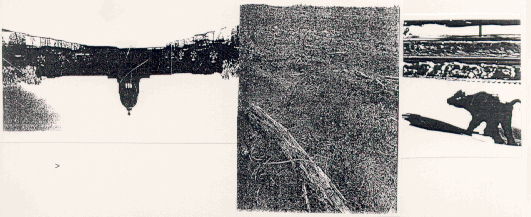

HYPERDEBOREALFORESTATIONTEXT
Hypertext: more of a process than a thing - movement through related subjects.
Fafard's cows * popular art - political art and anonymous art
* cattle industry - burger restaurants - consumption - deforestation
Boreal Forest * deforestation - cattle industry, foreign policy and legislation balance
"Is it still heimlich to you in your country where strangers are felling your woods?" This is a quote of Sigmund Freud which I chanced upon, and which happens to fit the purpose of this installation. The reading from which it comes is a chapter entitled "The 'Uncanny'" in The Standard Edition of the Complete Psychological Works of Sigmund Freud. Heimlich is the German word which in English means homely or homey. The word heimlich, Freud illustrates, is useful in the discussion of the uncanny because home, the root of the word, is something that is familiar to all, yet at the same time, the home is also a place of secrecy, hiding, and is thus also unfamiliar. What is familiar and simultaneously unfamiliar is what constitutes the experience uncanny, and in relation to the home, is largely what this piece is abme, is piece is abme, is largely what this piece is about.
Things of familiarity or unfamiliarity to consider:
* Is the fact that the Boreal forest is being cleared at a rate of five times faster than anywhere else in the world familiar?
* Is what goes on behind the doors of legislation familiar?
* Are foreign policies regarding businesses here and abroad familiar? Are any policies familiar?
* The familiarity of art. Fafard's cows are familiar, but are politically charged posters hung in high traffic areas familiar?

Back to gallery